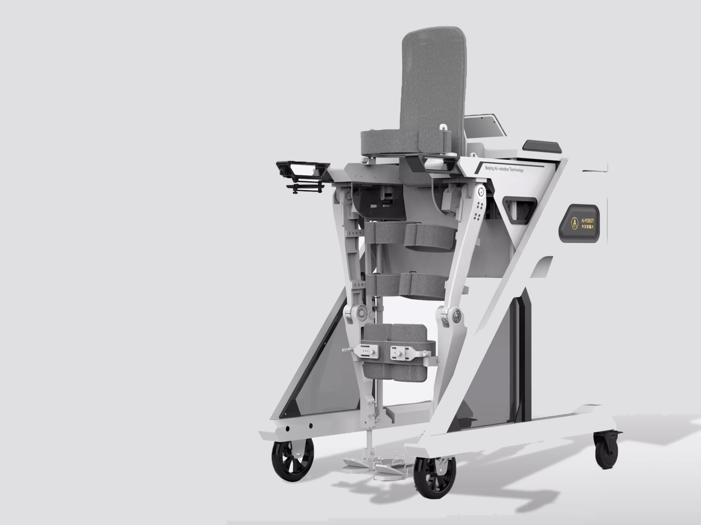
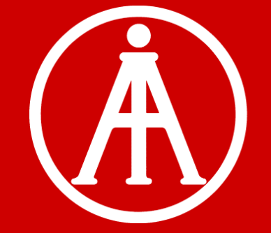

AiWalker


Product service design for AI-robotics — a rehabilitation device company rethinking how patients regain mobility after injury or surgery.
Context
AI-robotics builds robotic walking aids for stroke and post-surgery rehabilitation. The company needed help understanding how their existing product was actually used — and where the experience was quietly breaking down for patients and clinicians.
Approach
Published user-survey questionnaires and collected backend feedback from 103 users across different regions, then synthesized the patterns into a small set of priority frictions. Managed the UI and error reporting for the company's main site — resolving bugs and testing UX logic. In parallel, conducted competitive research on 20+ comparable rehabilitation devices and enterprises to position the product against the broader market.
Outcome
A clearer picture of how AiWalker is actually used in clinical and home settings, a tightened web experience with fewer error states, and a competitive landscape map the team uses for product planning.